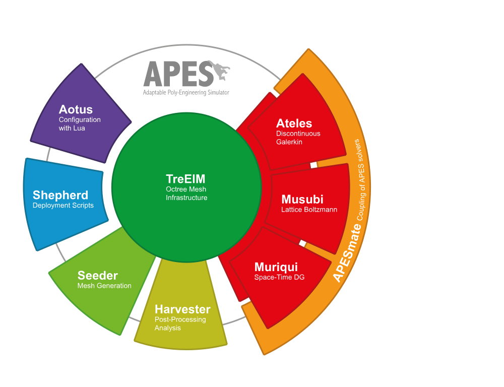

Kartik Jain, Assistant Professor of Biofluid Dynamics,
Department of Thermal and Fluid Engineering,
University of Twente,
The Netherlands
E-mail: k.jain@utwente.nl
The adaptable poly engineering simulator framework (APES)

The APES framework is developed and maintained at the Chair for
Simulation Techniques and Scientific Computing of the University of Siegen,
Germany.
I have contributed to parts of the solver, especially the LBM solver Musubi .
Components of the framework have been tested for scalability on all the
major supercomputers (Tier-0) in Europe including the SuperMUC-NG,
HazelHen, Juqueen as well as Piz Daint.
Most of the projects in my group use and develop one or more components of
this framework and it forms the backbone of my research.
Various members of APES are available as open sources packages that can be
downloaded here.